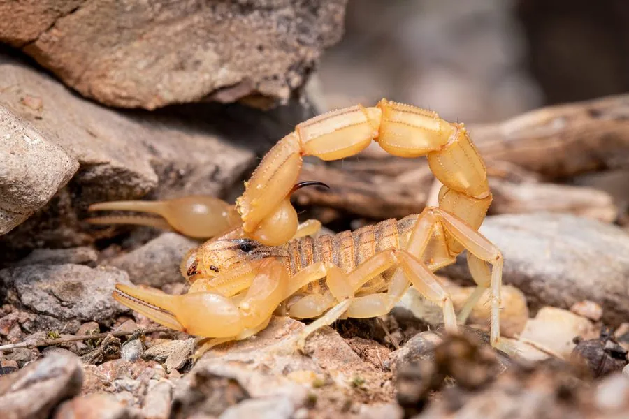

蛛形动物 · 动物界
地中海黄蝎 Buthus occitanus

体色黄褐、分布于地中海沿岸的蝎类，尾节粗壮，叮刺疼痛明显，少数病例可出现全身症状。
- 分类
- 门节肢动物门纲蛛形纲目蝎目科钳蝎科属蝎属
- 栖息环境
- 干燥石质荒地、橄榄园、石墙与房屋缝隙
- 地理分布
- 地中海沿岸（西班牙、法国南部、意大利、北非）
- 保护级别
- 常见种，无保护级别；属医学上有意义的蝎类
物种志
地中海黄蝎的体长约六至八厘米，体色黄褐至土黄，尾部较粗，各节有明显的深色脊线，双螯细长，头胸背板颗粒粗糙。它是欧洲最常见的蝎类之一，白天藏在石块、砖缝和树皮下，夜间出来活动。在紫外灯下全身泛出黄绿色荧光，是夜间寻找它的好办法。
它分布于地中海沿岸的西班牙、法国南部、意大利和北非，栖息在干燥的石质荒地、橄榄园和村落墙缝。它捕食昆虫、蜘蛛和小型无脊椎动物，行动敏捷，遇到威胁时先举起双螯，再以尾针快速刺击。叮刺后局部剧烈疼痛、红肿，少数人会出现出汗、恶心等全身反应，儿童和过敏体质者需就医。它的毒性弱于北非的近缘种，但仍不宜徒手捕捉，住宿时应检查鞋袜与床铺。
形态与习性
- 体长约六至八厘米，黄褐至土黄
- 尾部较粗，各节有深色脊线
- 荧光紫外灯下呈黄绿色荧光
- 食性捕食昆虫、蜘蛛等小型无脊椎动物
- 叮刺反应局部剧痛红肿，偶有出汗恶心
- 防范检查鞋袜床铺，不徒手翻石
趣味知识
- 它是欧洲人最常遇到的蝎子，翻开花园里的石板就可能见到。
- 紫外线手电是找蝎利器，照过去它会亮成一枚小灯。
- 被它叮到疼得钻心，但多数人几天内就会缓解，儿童要格外留意。